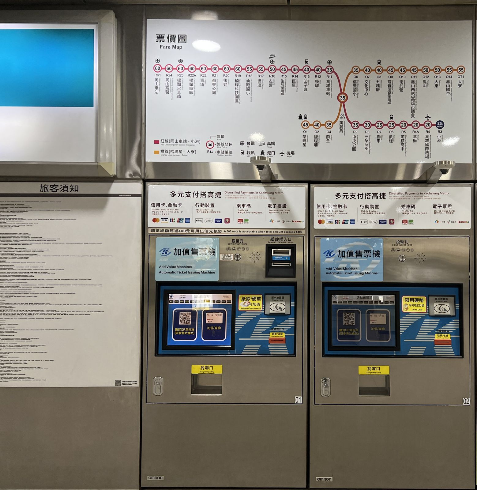

가오슝 여행 경비, 혼자 4박5일 교통비는 얼마일까?
MRT 한 번 NT$20부터, 패스는 하루에 많이 탈 때만 — 공식 요금표로 교통비 칸부터 채워 두면 예산 짜기가 훨씬 쉬워집니다.
게시
"가오슝 혼자 4박5일이면 교통비를 얼마나 잡아야 할까?" 가오슝 여행 경비에서 숙소와 식비는 고르는 곳에 따라 차이가 크지만, 교통비와 입장료는 공식 요금표로 꽤 정확하게 미리 계산할 수 있어요. 가오슝 MRT·경전철 운영사, 시 교통국, 페리·유바이크·관광지 공식 안내를 바탕으로 2026년 10월 기준으로 정리해봤어요.
01 · 가오슝 교통 요금 한눈에 보기
| 수단 | 공식 요금 (2026년 10월 기준) | 참고 |
|---|---|---|
| MRT | NT$20~60 (거리별) | 미려도→시즈완·옌청푸·싼둬 NT$20, 미려도→쭤잉 NT$25 |
| 공항↔시내 MRT | 공항→미려도 NT$30, 공항→가오슝역 NT$35 | 미려도까지 약 16분 |
| 경전철(순환선) | NT$20~35 | 5km까지 NT$20, 2km마다 NT$5 추가 |
| 치진 페리(구산↔치진) | 현금 NT$30 | 교통카드는 할인 요금 적용 |
| 유바이크 2.0 | 회원 30분 NT$10 (4시간 이내) | 시 보조로 첫 30분 NT$5 지원, 종료일은 시 공고 |
| 택시 | 1.25km까지 NT$85, 이후 200m마다 NT$5 | 23:00~06:00 20% 할증, 공항 승차장 NT$50 추가 |
MRT 요금은 가오슝 MRT 공식 요금 조회 기준이고, 일회용 승차권과 교통카드 요금이 같아요. 시내 주요 구간은 대부분 NT$20~25라서 하루 서너 번 타도 NT$100 안팎이에요.
02 · 혼자 4박5일 가오슝 여행 경비, 교통비 예시
시내에 숙소를 잡고 미려도 주변을 오가는 일정을 가정해 공식 요금으로만 더해 봤어요. 실제 금액은 동선과 횟수에 따라 달라집니다.
| 항목 | 횟수 | 합계 (2026년 10월 기준) |
|---|---|---|
| 공항↔미려도 MRT | 왕복 2회 | NT$60 |
| 시내 MRT (NT$20~25) | 3일 동안 9회 | NT$180~225 |
| 경전철 (NT$20~35) | 2회 | NT$40~70 |
| 치진 페리 (현금) | 왕복 2회 | NT$60 |
| 유바이크 2.0 (30분 이내) | 6회 | NT$30 (보조 적용) ~ NT$60 |
| 시립미술관 + 서우산 동물원 | 각 1회 | NT$130 (NT$90 + NT$40) |
| 합계 | 약 NT$500~605 |
택시나 호출 앱은 빼고 계산했어요. 밤늦게 짐을 들고 움직이거나 비 오는 날 한두 번 탈 계획이면 기본요금 NT$85에 거리 요금을 더해 따로 잡아 두세요. 호출 앱 요금은 탑승 전 앱에 뜨는 예상 금액을 확인하는 게 정확합니다.

03 · 가오슝 1일권·MeN Go 패스, 이득인 날은?
| 패스 | 가격 (2026년 10월 기준) | 쓸 수 있는 범위 |
|---|---|---|
| MRT 1일권 / 2일권 (QR) | NT$150 / NT$250 | MRT만, 개시한 날 운행 종료까지(24시간 아님) |
| MRT+경전철 1일권 / 2일권 (QR) | NT$200 / NT$325 | MRT·경전철 |
| MRT 24시간 / 48시간 카드 | NT$180 / NT$280 | MRT만, 역 안내소에서 판매 |
| MeN Go 24·48·72시간 (QR) | NT$199 / NT$299 / NT$399 | MRT·경전철·시내버스·시외버스(공로객운) 무제한, 페리 2회, 유바이크 매번 첫 30분 무료(유바이크 사이트에서 회원 연동 필요) |
| MeN Go 실물 카드 | NT$299 / NT$399 / NT$499 | QR과 같은 범위 |
MRT를 하루 6번 넘게 탈 때 NT$25 구간 기준으로 6번이면 NT$150이라, 이보다 많이 타는 날에만 MRT 1일권이 이득이에요.
버스·페리를 많이 섞는 날 MeN Go는 시내버스와 페리 2회, 유바이크까지 묶여 있어요. 치진섬·서우산처럼 버스와 배를 함께 쓰는 날에 따져볼 만합니다.
천천히 다니는 혼자 여행 하루 서너 번 타는 일정이면 교통카드로 그때그때 내도 충분해요. 위 예시의 5일 교통비(입장료 제외 NT$370~475)는 3일짜리 MeN Go 72시간 QR(NT$399)과 비슷한 수준입니다.
1일권은 날짜 기준 MRT 1·2일권 QR은 개시한 날 운행 종료까지라서, 저녁에 개시하면 손해예요. 아침부터 많이 움직이는 날에 쓰세요.
04 · 가오슝 교통비 줄이는 팁
교통카드 한 장 준비 MRT·경전철·페리 모두 아이패스(一卡通)·이지카드(悠遊卡)를 쓸 수 있어요. 경전철 매표기는 동전만 받아서 카드가 있으면 훨씬 편합니다.
유바이크는 회원으로 단일 대여(임시 회원)는 신용카드 결제만 되고 시 보조가 적용되지 않아요. 회원으로 아이패스를 등록하고 MRT·버스 요금을 그 카드로 낸 뒤 1시간 안에 빌리면 첫 30분이 무료예요(시 공고 기간 내).
짧게 끊어 타기 유바이크 2.0은 30분 단위로 요금이 붙고, 30분이 안 돼도 30분으로 계산해요. 시 보조도 첫 30분에만 붙으니 가까운 거리 위주로 타는 게 유리합니다.
심야 택시는 할증 감안 23:00~06:00에는 택시 요금이 20% 올라가요. 밤늦은 이동이 있으면 MRT 막차 시간을 먼저 확인해 두세요.
타는 법이 더 궁금하면 가오슝 경전철 요금·결제, 치진섬 페리 구산·중저우 비교, 가오슝·타이난 유바이크 빌리는 법을 함께 보세요. 현금은 대만 ATM 수수료 줄이는 법을 참고해 필요한 만큼만 뽑으면 됩니다. 남는 예산은 먹는 데 쓰는 게 가오슝 여행의 재미예요. 가오슝 노점 맛집에서 천사지파이 루이펑점 같은 곳을 골라 두고, 동선은 가오슝 맛집 지도에서 한 번에 확인해 보세요.
지도에서 가오슝 노점 맛집도 확인해보세요
교통비를 아낀 만큼 야시장·노점 맛집을 미리 찜해 두면 동선 짜기가 쉬워요.